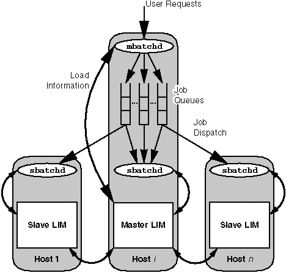

LSF Administrator's Quick Reference

Common Options
All commands take the following options. They will
not be shown unless they differ for a specific command:
- -h Print command usage to
standard error and exit.
- -V Print LSF version to
standard error and exit.
When used by the LSF system administrator, the bchkpnt,
bmig, bkill, bstop, bresume, and bswitch
commands take an extra option:
- -u username
- Operate on jobs submitted by the named user, or by all users if the
reserved user name all is given.
Administration
lsfsetup
Menu driven LSF installation, upgrade, and configuration
utility.
lsfrestart and lsfshutdown
Restart or shutdown the LSF daemons on all hosts
in the local cluster.
lsfrestart [-f]
lsfshutdown [-f]
-f Continue without seeking
confirmation if an error is encountered.
lsadmin
LSF administrative tool to control the operation
of LIM and RES
daemons in an LSF cluster. Without arguments, lsadmin prompts
for commands.
lsadmin [-h] [-V] [command [command_options] [command_args]]
- ckconfig [-v]
- Check LSF LIM configuration files.
If -v is specified, display detailed messages about configuration
file status.
- reconfig [-v] [-f]
- Restart LIM daemons on all hosts
in the local cluster. If -v is specified, display detailed messages
about configuration file status. If -f is specified, the operation
will proceed without confirmation unless the configuration files contain
fatal errors.
- limstartup [hostname ... | [-f] all]
limrestart [-v] [-f] [hostname ... | all]
limshutdown [hostname ... | [-f] all]
- Start-up, restart, or shut down LIM
daemons on the hosts specified or on all hosts in the local cluster if
the reserved hostname all is the only argument provided. Default:
local host. If -v is specified, display detailed messages about
configuration file status. If -f is specified, no confirmation
will be requested.
- limlock [-l duration]
limunlock
- Lock or unlock LIM daemon on the
local host. If -l is specified, the host is locked for duration
seconds; otherwise, it will be locked until explicitly unlocked. When a
host is locked, its LIM load status
becomes lockU.
- resstartup [hostname ... | [-f] all]
resrestart [hostname ... | [-f] all]
resshutdown [hostname ... | [-f] all]
- Start-up, restart, or shut down RES
daemons on the hosts specified or on all hosts in the local cluster if
the reserved hostname all is the only argument provided. Default:
local host. If -f is specified, no confirmation will be requested.
For resstartup, the LSF administrator should be able to use rsh
on all LSF hosts.
- reslogon [-c cpuTime] [hostname ... | all]
reslogoff [hostname ... | all]
- Turn on or turn off RES daemon task
logging on the hosts specified or on all hosts in the local cluster if
the reserved hostname all is the only argument provided. Default:
local host. RES will write resource
usage information into the log file lsf.acct.hostname.
If -c is specified, log only the tasks which used more than cpuTime;
otherwise all tasks will be logged.
- help [command ...]
- Display the syntax and functionality of the specified command(s).
- quit
- Exit the lsadmin session.
lsreconfig is an alias for lsadmin reconfig,
lslockhost is an alias for lsadmin limlock, and lsunlockhost
is an alias for lsadmin limunlock. These commands are for backward
compatibility.
badmin
Administration tool to control and monitor LSF Batch
with a set of privileged and non-privileged commands. Privileged commands
can only be invoked by root or LSF administrators; all other commands
can be invoked by any user. Without arguments, badmin prompts
for commands.
badmin [-h] [-V] [command [command_options] [command_args]]
- ckconfig [-v]
- Check LSF Batch configuration files. If -v is specified, display
detailed messages about configuration file status.
- reconfig [-v] [-f]
- Dynamically reconfigure the LSF Batch system. If -v is specified,
display detailed messages about configuration file status. If -f
is specified, the operation will proceed without confirmation unless the
configuration files contain fatal errors.
- qopen [queue_name ... | all]
qclose [queue_name ... | all]
qact [queue_name ... | all]
qinact [queue_name ... | all]
- Open, close, activate, or inactivate the LSF Batch queues specified
by queue_name, or all queues if the reserved word all is
given. If no queue is specified, the system default queue is assumed.
- qhist [-t time0, time1] [-f logfile_name] [queue_name
...]
hhist [-t time0, time1] [-f logfile_name] [host_name ...]
mbdhist [-t time0, time1] [-f logfile_name]
hist [-t time0, time1] [-f logfile_name]
- Display the event history of LSF Batch; qhist displays the
named queues (default: all queues), hhist displays the named hosts
(default: all hosts), mbdhist displays the master batch daemon
(mbatchd) and hist
displays all three. If -t is specified, display only those events
that happened during the period from time0 to time1 (see
bhist(1) for the time format). If -f is specified,
use logfile_name as the event log file.
- hopen [host_name ... | all]
hclose [host_name ... | all]
- Open or close the server hosts specified or all hosts in the LSF Batch
system if the reserved hostname all is given. Default: local host.
- hstartup [host_name ... | [-f] all]
hrestart [host_name ... | [-f] all]
hshutdown [host_name ... | [-f] all]
- Start-up, restart, or shut down slave batch daemons (sbatchd)
on the server hosts specified or all hosts in the LSF Batch system if the
reserved hostname all is given. Default: local host. If -f is
specified, , no confirmation will be requested. For hstartup,
the LSF administrator should be able to use rsh on all LSF hosts.
- help [command ...]
? [command ...]
- Display the syntax and functionality of the specified command(s).
- quit
- Exit the badmin session.
xlsadmin
Motif-based Graphical User Interface application
for LSF administration.
Accounting
bacct
Report accounting statistics on completed batch jobs
in the LSF Batch system.
bacct [-h] [-V] [-b] [-l] [-w] [-d] [-e] [-f logfile] [-N host_spec]
[-C time0, time1] [-S time0, time1] [-D time0, time1] [-q queuelist]
[-m hostlist] [-u userlist|all] [-P projectlist] [jobId ...]
- -b
- Display brief information on each job and a summary. Default: display
only the summary.
- -l
- Display all the information on each job and a summary. Default: display
only the summary.
- -w
- Display in wide format. No truncation is performed on user name, queue
name, from host, execution host or job name.
- -d
- Consider only successfully completed jobs (DONE status). Default:
all finished jobs (DONE or EXIT status).
- -e
- Consider only exited jobs (EXIT status). Default: all finished
jobs (DONE or EXIT status).
- -f logfile
- Use logfile as the job log file to be analysed. Default: the
current job log file (lsb.acct).
- -N host_spec
- Display normalized CPU time relative to the host type, host model,
or CPU factor of the execution host.
- -C time0, time1
- Consider only those jobs whose completion or exit times were within
the time interval time0 to time1. Default: all logged jobs.
- -S time0, time1
- Consider only those jobs whose submission times were within the time
interval time0 to time1. Default: all logged jobs.
- -D time0, time1
- Consider only those jobs whose dispatch times were within the time
interval time0 to time1. Default: all logged jobs.
- -q queuelist
- Consider only jobs submitted to the named queues. Default: all queues.
- -m hostlist
- Consider only jobs executed on the named hosts. Default: all hosts.
- -u userlist|all
- Consider only jobs submitted by the named users, or all users if the
reserved name all is given. A mixture of user names and user IDs
can be listed. Default: the invoker.
- -P projectlist
- Consider only those jobs submitted to projectlist. If two or
more project names are given, they must be enclosed by (")
or ('). The default is to consider all project names.
- jobId
- Consider only the specified jobs. This option overrides all other options
except -h, -V, -b,
-l, and -f. Default:
all jobs that satisfy the other options.
LSF Components
LSF has four parts to its architecture: a Load Information
Manager (LIM), a Remote Execution Server
(RES), a slave batch daemon (sbatchd)
and a master batch daemon (mbatchd).
They are root owned daemons. LIM, RES and sbatchd
run on each host in a load sharing cluster. These daemons are invoked at
boot time. The sbatchd daemon on the master host invokes mbatchd.
LIM
The LIM collects load and resource information about
all hosts in the cluster and provides host selection services to applications
through LSLIB. The LIM maintains information on static system resources
and dynamic load.
RES
The RES provides the mechanisms for transparent remote
execution of tasks. The RES accepts remote execution requests from all
load sharing applications and handles input/output on the remote host for
load shared processes.
mbatchd
User jobs are held by mbatchd when submitted.
mbatchd periodically checks the load information on all candidate
hosts by contacting the master LIM.
When a host with the necessary resource becomes available, mbatchd
will send a job to the sbatchd
on that host for execution. When more than one candidate host becomes available,
mbatchd chooses the best host.
sbatchd
An sbatchd daemon accepts job execution
requests from the mbatchd,
and monitors the progress of its jobs. sbatchd controls the execution
of the jobs and reports job status to mbatchd.
Troubleshooting
What Should Be Running?
The process status command, ps, run on an
LSF server host should show the LIM
(lim), RES (res),
and sbatchd daemons. The master
host should also show the mbatchd
daemon.
| LSF Files |
Directory |
| lsf.conf |
$LSF_ENVDIR/etc |
| lsfsetup |
$LSF_SERVERDIR |
| All LSF daemons |
$LSF_SERVERDIR |
| Administration tools |
$LSF_BIN |
| Configuration files |
$LSF_CONFDIR |
| Batch configuration files |
$LSF_CONFDIR/lsbatch/cluster/configdir |
| lsf.acct.host |
$LSF_RES_ACCTDIR or /tmp |
| lsb.acct |
$LSB_SHAREDIR/cluster/logdir |
| lsb.events |
$LSB_SHAREDIR/cluster/logdir |
| daemon.log.host |
$LSF_LOGDIR |
LSF Error Log Files
LSF error messages can be logged to either syslog,
or log files if LSF_LOGDIR is defined in lsf.conf. There
are three error log files for each server host: lim.log.host,
res.log.host and sbatchd.log.host. In addition,
the master host has mbatchd.log.host.
LSF Configuration Files
lsf.conf
Generic environment configuration file describing
the configuration and operation of the LSF installation.
- LSF_CONFDIR
- The directory where all the rest of the LSF configuration files are
installed.
- LSF_SERVERDIR
- The directory where all LSF server binaries are installed.
- LSF_ROOT_REX
- Allow root to run jobs through LSF.
- LSF_LOG_MASK
- Set the level of daemon error message logging.
- LSF_LOGDIR
- Directory under which error messages from all daemons are logged.
- LSF_SERVER_HOSTS
- Defines one or more LSF server hosts that the application must contact
in order to get in touch with a LIM.
Typically used by client-only hosts that do not run a LIM.
- LSF_AFS_CELLNAME
- AFS cellname must be specified here if AFS is installed.
- LSF_AUTH
- Defines the type of authentication to use.
- LSF_STRIP_DOMAIN
- If all hosts in the cluster can be reached using short host names,
this parameter can be used to specify the portion of the domain name to
remove.
- LSF_LICENSE_FILE
- The full pathname of the FLEXlm license file used by LSF.
- LSF_LIM_PORT
- Defines the UDP port number LIM
uses to serve all applications.
- LSF_RES_PORT
- Defines the TCP port number RES
uses to serve all applications.
- LSB_CONFDIR
- The directory where the LSF Batch configuration files are installed.
- LSB_DEBUG
- If defined, LSF Batch will run in single user mode.
- LSB_MAILPROG
- Defines the name of a sendmail-compatible transport program.
- LSB_MAILTO
- Defines the user to whom LSF Batch sends electronic mail when jobs
complete or have errors, and in the case of critical system errors.
- LSB_MBD_PORT
- Defines the TCP port number mbatchd
uses to serve all applications.
- LSB_SBD_PORT
- Defines the TCP port number sbatchd
uses to serve all applications.
- LSB_SHAREDIR
- Defines where LSF Batch keeps job history and accounting log files
for each cluster.
lsf.shared
This is the system configuration file that is shared
by all load sharing clusters of an LSF installation. This file contains
the following sections:
- Cluster
- Contains a list of the names of the clusters in this LSF installation.
Keywords: ClusterName, Servers.
- HostType
- Defines the list of valid host types. Keywords: TypeName
- HostModel
- Defines the host models and their associated CPU scaling factors. Keywords:
ModelName, CPUFactor.
- Resource
- Defines static resource names. Keywords: ResourceName, Description.
- NewIndex
- Defines external load indices (site defined load indices).
lsf.cluster.cluster
The configuration file for the named cluster.
The cluster name must be defined in lsf.shared.
- Parameters
- Specifies miscellaneous parameters.
- ELIMARGS
- Specifies the arguments to be passed to the external LIM
on startup.
- FEATURES
- Specifies the names of those LSF features that are to be enabled for
all the hosts in the cluster. Valid names: lsf_base (LSF Base)
lsf_batch (LSF Batch), lsf_mc (LSF MultiCluster), and
lsf_js (LSF JobScheduler). Default: lsf_base and lsf_batch.
- ClusterAdmins
- Defines LSF administrators for this cluster. Keywords: ADMINISTRATORS.
- RemoteClusters
- Defines the remote clusters that the local cluster is interested in.
Only used in an LSF MultiCluster environment.
- CACHE_INTERVAL
- Controls how long load information from the remote cluster is cached
locally.
- EQUIV
- Specifies the remote cluster may be "equivalent" to the local
cluster.
- RECV_FROM
- Controls whether remote cluster users can run interactive jobs on local
cluster.
- Host
- Lists the hosts that form this cluster together with their attributes.
- HOSTNAME
- The official host name (as returned by hostname(1)).
Mandatory.
- model
- Determines the CPU scaling factor for the host. Mandatory.
- type
- Defines the host type. Mandatory.
- server
- Defines the host as a server. Optional. Default: 1 (server).
- ND
- Defines the number of local disks on this host. Optional. Used when
LIM does not report disks correctly.
- r15s, r1m, r15m, ut,
pg, it, io, ls, swp, mem,
tmp, and external index names
- Load threshold indices. The host is marked as busy when any
value is exceeded.
- RESOURCES
- The static resources associated with this host.
- RUNWINDOW
- Defines when the host accepts remote jobs.
lsf.task, lsf.task.cluster,
and .lsftask
Task resource requirement lists. lsf.task
applies to all clusters and all users while lsf.task.cluster
applies to the named cluster. Individual users can define a .lsftask
in their home directory.
- RemoteTasks
- Defines the tasks that can be run remotely. A resource requirement
string may be appended to a task.
hosts
Defines LSF hosts in order to resolve inconsistent
host naming practices in some environments. The format is the same as /etc/hosts.
lsb.params
This file defines the operating parameters of LSF
Batch.
- DEFAULT_QUEUE
- The system default queues.
- DEFAULT_HOST_SPEC
- A host name or host model name used as the system default for adjusting
CPU time limit.
- MBD_SLEEP_TIME
- The job dispatching interval in seconds.
- SBD_SLEEP_TIME
- The job checking interval in seconds.
- JOB_ACCEPT_INTERVAL
- The minimum interval between dispatching jobs to the same host. Measured
in numbers of MBD_SLEEP_TIME periods.
- MAX_SBD_FAIL
- The maximum number of retries for reaching a non-responding sbatchd
daemon.
- CLEAN_PERIOD
- The amount of time that records are kept by the mbatchd
daemon for jobs that have finished or been killed.
- MAX_JOB_NUM
- The maximum number of finished jobs that the lsb.events file
can store before mbatchd switches
to a new file.
- HIST_HOURS
- The number of resent hours during which the CPU time used by a user
is considered when calculating the priorities of a fairshare queue.
- PG_SUSP_IT
- The number of seconds during which a host should be interactively idle
before a pg suspended job can be resumed.
- DEFAULT_PROJECT
- The system default project name.
lsb.queues
This file defines the job queues configured for an
LSF cluster.
- QUEUE_NAME
- Name of the queue. 'default' is reserved and cannot be used
as queue name.
- DESCRIPTION
- A brief description of the queue.
- PRIORITY
- Priority of the queue.
- NICE
- The nice value for running jobs.
- QJOB_LIMIT
- The maximum number of job slots.
- UJOB_LIMIT
- Per-user maximum number of job slots.
- HJOB_LIMIT
- Per-host maximum number of job slots.
- PJOB_LIMIT
- Per-processor maximum number of job slots.
- FAIRSHARE
- Jobs in this queue are scheduled based on a fair share policy.
- PREEMPTION
- Defines preemption relationship between this queue and other queues:
- PREEMPTIVE
- Jobs in this queue may preempt jobs (running or suspended) from lower
priority queues.
- PREEMPTABLE
- Running jobs from this queue may be preempted by jobs in higher priority
queues even if those higher priority queues have not specified PREEMPTIVE.
- EXCLUSIVE
- Jobs dispatched from this queue can run exclusively on a host if the
user so specifies at job submission time.
- INTERACTIVE
- Specifies the queue's policy in accepting interactive jobs.
- JOB_ACCEPT_INTERVAL
- The minimum interval between dispatching jobs to the same host. Overrides
the same parameter in lsb.params.
Measured in numbers of MBD_SLEEP_TIME periods
- JOB_CONTROLS
- Control actions for suspending, resuming, and terminating jobs dispatched
to this queue.
- TERMINATE_WHEN
- Specifies that the TERMINATE action be invoked (instead of the SUSPEND
action) when the run window closes, the load exceeds the suspending thresholds,
or the job is being preempted to allow another job to run.
- DISPATCH_WINDOW
- Defines the times during which jobs in this queue can be dispatched.
- RUN_WINDOW
- Defines the times during which jobs in this queue may execute.
- NEW_JOB_SCHED_DELAY
- The delay time after a new job has been submitted to this queue before
mbatchd starts a new schedule
session.
- SLOT_RESERVE
- Job slots reservation time threshold for scheduling parallel jobs.
Measured in numbers of MBD_SLEEP_TIME periods.
Default: 0.
- USERS
- The names of users and user groups that are authorized to use this
queue.
- ADMINISTRATORS
- Administrators of the queue.
- HOSTS
- Names of hosts, host groups and host partitions that are used to run
jobs from this queue.
- r15s, r1m, r15m, ut,
pg, io, ls, it, swp, mem,
tmp, and external index names
- The threshold values for the individual load indices used in scheduling
and suspending jobs.
- RES_REQ
- The resource requirements for selecting and sorting candidate hosts
to run jobs in this queue.
- STOP_COND
- Resource requirement string specifying the condition for suspending
a running job in this queue.
- RESUME_COND
- Resource requirement string specifying the condition for resuming a
suspended job in this queue.
- MIG
- The automatic job migration threshold in minutes.
- DEFAULT_HOST_SPEC
- A host name or host model name for adjusting CPU time limits.
- SNDJOBS_TO
- Specifies the list of remote queues to send jobs to. For LSF MultiCluster
only.
- RCVJOBS_FROM
- Specifies the list of remote clusters that are allowed to send jobs
to the queue. For LSF MultiCluster only.
- CPULIMIT
- The total amount of normalized CPU time that a job from this queue
is allowed to consume.
- RUNLIMIT
- The wall-clock run time limit for a job from this queue.
- PROCLIMIT
- The processor limit (parallelism limit) for a parallel job which can
be accepted by this queue.
- FILELIMIT
- The per-process file size limit for all jobs from this queue.
- DATALIMIT
- The per-process data segment size limit for all jobs from this queue.
- STACKLIMIT
- The per-process stack segment size limit for all jobs from this queue.
- CORELIMIT
- The per-process core file size limit for all jobs from this
queue.
- MEMLIMIT
- The amount of total resident set size limit for a job from this queue.
- SWAPLIMIT
- The amount of total virtual memory limit for a job from this queue.
- PROCESSLIMIT
- The number of concurrent processes for a job from this queue.
- PRE_EXEC
- The pre-execution command for the jobs in the queue.
- POST_EXEC
- The post execution command for the jobs in the queue.
- REQUEUE_EXIT_VALUES
- The exit values used by LSF Batch to requeue jobs dispatched from a
queue.
- JOB_STARTER
- Job starter command for jobs in the queue.
- NQS_QUEUES
- The NQS destination queues.
lsb.hosts
This file contains information about the batch server
hosts in an LSF cluster.
- Host
- Defines the hosts that are used by an LSF cluster as batch job servers.
- HOST_NAME
- The host name. It can be the official host name, the host type name,
the host model name, or the reserved word default.
- MXJ
- The maximum number of job slots that this host can process concurrently.
- JL/U
- The maximum number of job slots per user that can be processed concurrently
on this host.
- DISPATCH_WINDOW
- Defines the times during which batch jobs may be dispatched to this
host to run.
- r15s, r1m, r15m, ut,
pg, io, ls, it, swp, mem,
tmp, and external index names
- The threshold values for individual load indices used in scheduling
and suspending jobs.
- CHKPNT
- Specifies special types of checkpoint support available on the host.
- MIG
- The automatic job migration threshold.
- HostGroup
- Defines host groups, which are aliases for groups of hosts.
- GROUP_NAME
- The name of a host group.
- GROUP_MEMBER
- A list of names of hosts and host groups that are members of the group.
- HostPartition
- Defines subsets of hosts that must be accessed by users in a controlled
manner, giving each user or user group a fair share of the resources.
- HPART_NAME
- The name of the host partition.
- HOSTS
- A list of names of hosts and host groups that are members of the host
partition.
- USER_SHARES
- A number of [username, share] pairs.
lsb.users
This file contains information about the batch users
in an LSF cluster.
- UserGroup
- Defines user groups, which are aliases for groups of users.
- GROUP_NAME
- The name of a user group.
- GROUP_MEMBER
- A list of names of users and user groups that are members of the group.
- User
- Defines the maximum number of jobs that can be run concurrently by
the LSF Batch system for specific users or user groups.
- USER_NAME
- The user name, the user group name or the reserved word default.
- MAX_JOBS
- The maximum number of job slots for this user or user group that can
be used concurrently in the cluster.
- JL/P
- The maximum number of job slots for this user or user group that can
be used concurrently on each processor.
lsb.calendars
This file contains the definitions of system calendars.
It is only applicable to LSF JobScheduler systems.
- NAME
- The name of the calendar.
- TIME_EVENTS
- A list of time expressions separated by spaces defining when this calendar
is active. The format of a time expression is "year:month:day:hour:min[%duration]".
- DESCRIPTION
- A string description of the calendar.
LSF Architecture

Related Documents
Documentation for LSF consists of this reference
and the LSF User's Quick Reference,
the LSF Installation Quick Reference,
the LSF User's Guide, the LSF
Administrator's Guide, the LSF
Programmer's Guide, the LSF JobScheduler
User's Guide, the LSF man pages, and the xlsadmin,
xlsbatch, and xlsmon on-line help.
doc@platform.com
Copyright © 1994-1997 Platform Computing Corporation.
All rights reserved.
{kind=link}